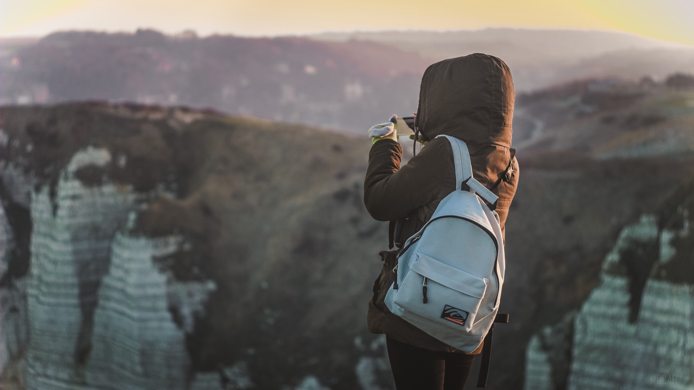

Hi There! I'm Meagan Smith
Trong khoảng đôi ba năm đổ lại đây, Trekking đã dần trở thành trào lưu được chào đón phổ biến ở Việt Nam. Vậy trekking là gì? Đi trekking (hay go trekking / đi trek / trekking travel) là một hoạt động dã ngoại đầy mạo hiểm dưới hình thức leo núi diễn ra ở những nơi hoang dã như núi, rừng.
Chính vì độ mạo hiểm và cảm giác mong muốn chiến thắng nơi hoang dã khiến cho Trekking trở thành hoạt động được rất nhiều bạn trẻ ưa thích và ngày một nhiều người ở mọi độ tuổi tiếp cận để trải nghiệm.
Người tham gia Trekking thường được gọi là Trekker sẽ hoàn thành hành trình chinh phục thiên nhiên với những chuyến đi bộ đường dài nhiều ngày, bao gồm cả việc "trèo đèo, lội suối" với hành lý (đồ trekking) tự mang bởi mỗi cá nhân. Tất nhiên, đường đi Trek không thể nào là đường bằng phẳng mà phải gồ ghề, khó di chuyển thì mới trở nên thách thức được.
Trekking không giới hạn điểm đến và đi, thậm chí, nhiều Trekker còn có chuyến hành trình đi từ nước này sang nước khác chỉ bằng chính đôi chân của họ. Khi bắt đầu tiếp cận Trekking, bạn sẽ được nghe nhiều về từ "Cung Trek", hãy xem bài viết cung đường là gì để biết những điều cần lưu ý khi chọn lựa cung Trek phù hợp nhé.
Categories
- Courses (12)
- News (22)
- Design (37)
- HTML (42)
- Web Development (14)